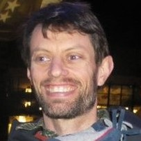
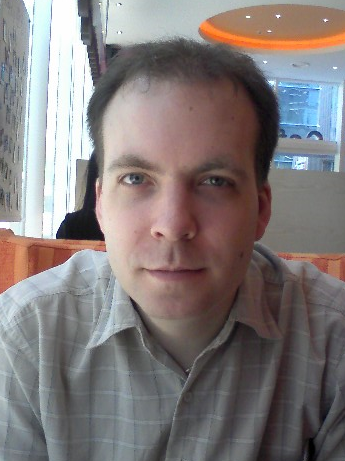

Walter Bright
 |
Walter Bright is the creator and first implementer of the D programming language and has implemented compilers for several other languages. He's an expert in all areas of compiler technology, including front ends, optimizers, code generation, interpreter engines and runtime libraries. Walter regularly writes articles about compilers and programming, is known for engaging and informative presentations, and provides training in compiler development techniques. Many are surprised to discover that Walter is also the creator of the wargame Empire, which is still popular today over 30 years after its debut. |
Andrei Alexandrescu
 |
Andrei Alexandrescu coined the colloquial term "modern C++" (adapted from his award-winning book Modern C++ Design), used today to describe a collection of important C++ styles and idioms. He is also the coauthor (with Herb Sutter) of C++ Coding Standards and the author of The D Programming Language book. With Walter Bright, Andrei co-designed many important features of D and authored a large part of D's standard library. His research on Machine Learning and Natural Language Processing completes a broad spectrum of expertise. Andrei holds a Ph.D. in Computer Science from the University of Washington and a B.Sc. in Electrical Engineering from University "Politehnica" Bucharest. He works as a Research Scientist for Facebook. |
Scott Meyers
 |
Scott Meyers is one of the world's foremost authorities on C++. Author of the best-selling Effective C++ series (Effective C++, More Effective C++, and Effective STL), he’s also a founder of C++ and Beyond and the consulting editor for Addison Wesley's Effective Software Development Series. He provides training and consulting services to clients worldwide. |
Maxime Chevalier-Boisvert
 |
Maxime Chevalier-Boisvert is the creator of Higgs, an experimental JIT compiler for JavaScript written in D. She holds a master's degree from McGill University and is currently pursuing a PhD at Université de Montréal as part of the Dynamic Language Team. Her area of study is compiler design and optimization, with a focus on dynamic programming languages, JIT compilers and type analysis. |
Chuck Allison
 |
Chuck Allison was an early member of the ISO C++ Standards committee (1991–2001) and designed and provided the reference implementation for std::bitset. He was a columnist and editor for the C/C++ Users Journal (1992–2003), and wrote two books on C++: C & C++ Code Capsules (1998) and Thinking in C++, Volume 2, with Bruce Eckel (2004), both published by Prentice-Hall. After twenty years of developing software he returned in 2001 to his first professional love, teaching. He is a professor and chair of computer science at Utah Valley University in Orem, Utah. He has published over 100 articles and in his spare time gives training on C++, Python, D and software development principles. Except when he is playing his classical guitar or bicycling the backroads of central Utah, that is. He was an early adopter of D and has never missed a DConf. |
Iain Buclaw
| Lead developer, project coordinator and the principal force behind the development of the GNU D Compiler from as far back as 2009, where have been responsible for the migration over from D1 to D2, as well as from GCC 3.x to GCC 4.x. Others might be interested to know that outside hobby life I work on for a Cloud Services/Hosting company as a Technical Engineer, and unofficially use D on a frequent basis to develop interpreters, and various plug-ins to work within our infrastructure. |
Don Clugston
|  | Don is a Senior Software Developer at Sociomantic Labs, Berlin. He has contributed to the D language since 2005, mainly in the areas of mathematics and metaprogramming. Before joining Sociomantic as a full-time D programmer, he worked in the solar photovoltaic industry on numerical modelling, measurement, and industrial inkjet. His 'FastDelegate' library is well known in the C++ community. He has two sons, and a daughter with superpowers. |
Jonathan Crapuchettes
 |
Jonathan Crapuchettes is a senior programmer at EMSI, a CareerBuilder company. He has been developing applications for economic models and data manipulation for the last eight years and has been using D since version 1.0 was released. He holds a BS in computer science from Eastern Washington University. |
Stephan Dilly
 |
I am Stephan Dilly, a 27 years old Senior Software Engineer at Funatics Software GmbH. Being a professional in the gaming industry for 6 years I worked for titles like "The Settlers - Rise of Cultures" for PC and "Endwar" for PSP/NDS. During the last 3 years and due to the shifting in this sector from boxed to online games I mainly focused on developing server backends for massive online titles including "Cultures Online" and most recently "Panzer General Online". D is on my radar at least since 2007 (I submitted the first dmd bug back then), in 2009 I wrote my B.Sc Thesis about "D in game development" and now I finally convinced my boss to switch from Node.js to D in production. The D sphere knows me best as "Extrawurst", my contributions to TDPL, for my article series about this talk’s topic, the various libraries I open sourced for developing a mobile game server backend in D and my engagement to bring German speaking D developers together in the #d.de channel as an operator. |
Adam Simpkins
| Adam Simpkins is a software engineer at Facebook. He works primarily on networking infrastructure projects, building network switches, HTTP load balancers, and contributing to thrift development. Prior to Facebook he worked at Cisco and some smaller start-ups working on CIFS and NFS network file system protocols. |
Michael V. Franklin
|  |
Bachelor of Science in Computer Engineering – Trained in C/C++
|
Atila Neves
 |
I have a PhD in Particle Physics for research done at CERN. Most of the research itself required programming in C++, and I also had a major participation in the coding of the experiment’s data acquisition and decoding software in C and C++. I later joined the Computer Security Team at CERN in the IT department and spent two years there writing Perl.
I currently work at Cisco writing networking software, my job having re- quired me to write in C, C++, Perl, Python, Java and Ruby. I even wrote a small D wrapper for our C API for fun. The software I wrote and will cover in the talk stems from the work done at my job at Cisco. Both software libraries were written as a better alternative inspired by the code used at work for writing unit tests and serialising network protocol packets. I first wrote them in C++ and after learning D soon realised that both of them would work better in D due to D’s unique capabilities. The result of this work was a comparison of MQTT broker implementations in different languages, D being one of them, that ended up generating a lot of discussion on Hacker News and programming subreddit. |
Dmitry Olshansky
 |
Dmitry Olshansky, a young all-around researcher and D enthusiast. Interests changed wildly over time and today include: text processing, compilers, robotics, embedded systems, parallel and concurrent programming, scalable network systems. Currently enrolled as Ph.D student, with the thesis being focused on a specific class of AI systems. The most recognized work is the standard regular expression library for D (a.k.a. std.regex). |
Vladimir Panteleev
 |
I am Vladimir Panteleev, a D enthusiast from Moldova (Eastern Europe). I am known in the D community for authoring DFeed (http://forum.dlang.org), DustMite, and several other tools, some of which will be covered in this talk. |
Brad Roberts
 |
I first became aware of D in 2005 when Steve Yeggie included it in a survey of programing languages blog post he wrote while the two of us were at Amazon. A year or so later I wanted to learn more and was appalled at the lack of infrastructure I expected to find in a project of it's scale. Newsgroups only, no bug tracking, no source control system (no, occasional tarballs doesn't count, Walter), incomplete source, no public tests, etc. So, I set out to make all of these things exist/happen.
Outside the realm of D, I've been writing software professionally for the last 25 years, primarily in data processing and back-end systems. Lots of networking, telecom, database, and distributed systems work for IBM, Informix, Netscape, and Amazon to list the ones anyone would recognize. Additional, at each of those companies, I've tended to also invest considerable time in supporting the software management systems. |
Adam Ruppe
| I've been a freelance programmer since 2009, using primarily D as a server-side web language. For the last several months, I have also been working on writing a D "cookbook" for people to learn the language through practical examples. I joined the D community in 2007 and started programming (with assembly language and Digital Mars C) in 1999. My open source and hobbyist experience covers a wide spectrum of programming related fields from bare metal code to compilers to homemade games. |
Amaury Sechet
 |
Amaury Sechet is a software engineer at Facebook and the main developer of SDC. |
Mihails Strasuns aka "Dicebot"
 |
Programming & open-source enthusiast. Contributor to several D projects, most notably vibe.d. D developer at Sociomantic Labs. One of Arch Linux Trusted Users. |
Adam Wilson
 |
Adam Wilson is the Director of Software Development at Prospective Software which specializes in CRM software for the automotive industry. He has over 15 years of experience writing code in a plethora of languages, but has focused on C++, C#, and of course D. Adam also holds a Computer Game Development Certificate from Edmonds Community College which he earned in 2007. In his free time he enjoys spending time with his wife, reading science-fiction, flying light aircraft, and hacking on D code. |